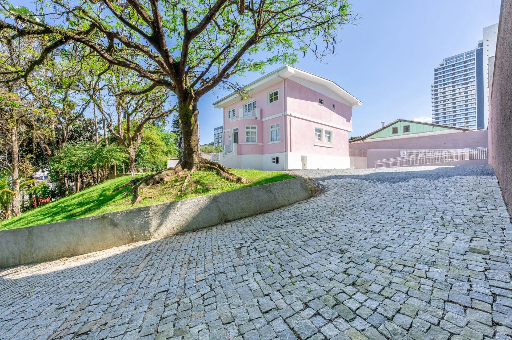
Pousada Encanto da Vila
A Pousada Encanto da Vila está localizada na Rua Itapiranga, 211, no bairro Velha, em Blumenau. Sua localização estratégica permite fácil acesso ao centro histórico da cidade e possibilita chegar a pé ao Parque Vila Germânica, tornando-se uma escolha especialmente conveniente para quem deseja explorar a cidade e participar de eventos locais.
Inaugurada oficialmente em 2024, a pousada apresenta uma proposta acolhedora e contemporânea. O imóvel passou por recentes reformas e foi cuidadosamente planejado para oferecer uma experiência de hospedagem moderna, confortável e funcional.
A reputação da Pousada Encanto da Vila é altamente positiva. Em avaliações recentes, os hóspedes destacam de forma recorrente a limpeza, a organização, o conforto dos quartos e a cordialidade dos proprietários e da equipe, fatores que contribuem para uma estadia agradável e tranquila. Aliando sossego e praticidade, a pousada oferece Wi-Fi gratuito, estacionamento privativo, quartos climatizados e uma estrutura adequada para famílias. Além disso, conta com recepção das 7h às 19h, check-in das 13h às 19h e check-out das 7h às 11h, atendendo tanto hóspedes a lazer quanto aqueles que visitam a cidade a negócios ou para participação em eventos.
Nossos Ambientes
Os ambientes da Pousada Encanto da Vila foram cuidadosamente planejados para proporcionar uma experiência acolhedora desde o primeiro contato. Cada espaço comum exibe uma combinação equilibrada entre estilo contemporâneo e clima caseiro, permitindo que o hóspede se sinta confortável e à vontade.
Atendimento
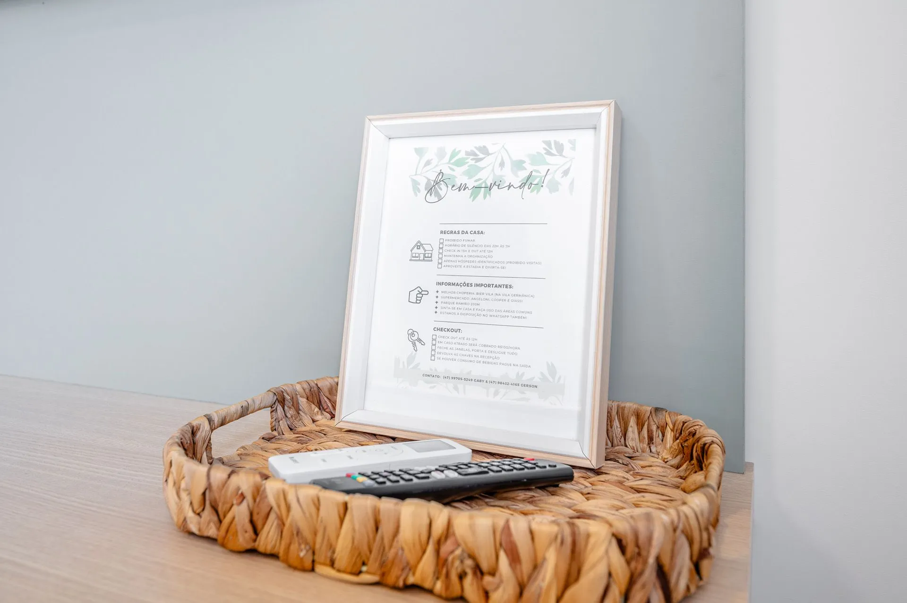
O atendimento é, sem dúvida, um dos diferenciais da Pousada Encanto da Vila. Os anfitriões e colaboradores são conhecidos pela cordialidade, atenção e disposição em ajudar, o que cria uma experiência personalizada e acolhedora.
Localização
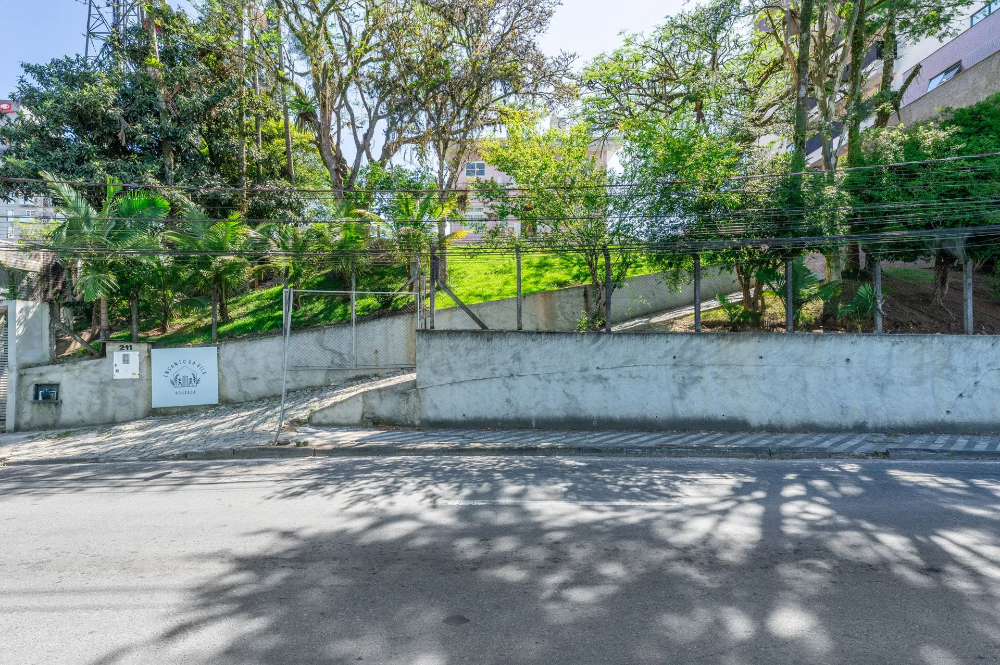
A localização da pousada é um grande destaque para quem visita Blumenau. Situada no bairro Velha, está a poucos minutos de caminhada da Vila Germânica — epicentro dos principais eventos da cidade, incluindo a tradicional Oktoberfest. Essa proximidade oferece praticidade para quem deseja participar de festivais, feiras e atrações turísticas.
Sofisticação
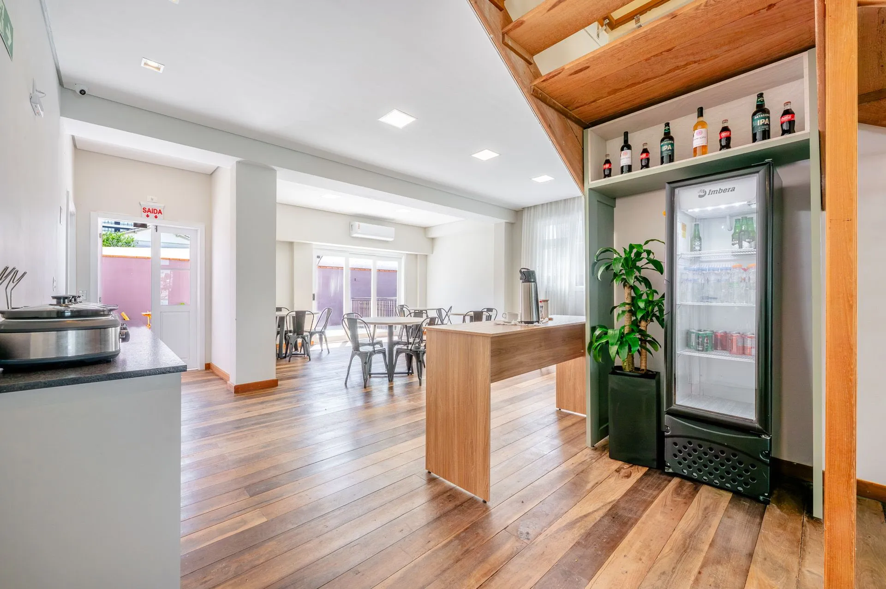
A sofisticação da Pousada Encanto da Vila está presente em cada detalhe, desde a seleção cuidadosa dos móveis até o acabamento impecável das acomodações.
Conforto
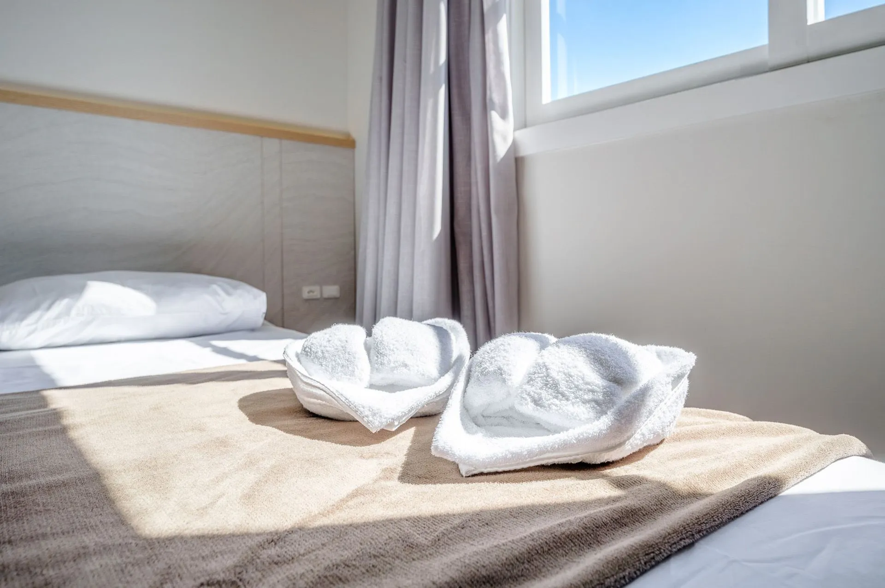
O conforto é um dos principais pontos fortes da pousada. As acomodações contam com climatização, camas de alta qualidade, roupas de cama selecionadas e banheiros modernos, garantindo noites tranquilas e renovadoras. Cada elemento do quarto foi pensado para atender às necessidades dos hóspedes, proporcionando funcionalidade e bem-estar.
Lazer
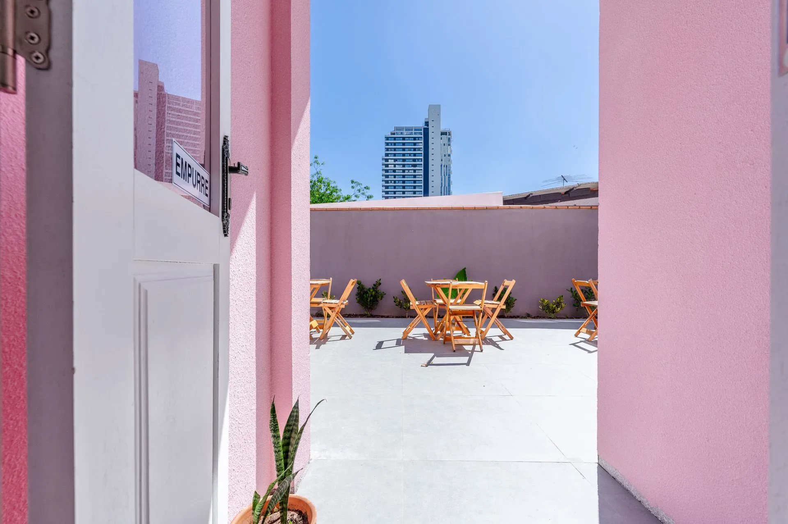
Apesar de não ser um estabelecimento de grande porte, a pousada proporciona oportunidades de lazer simples, acolhedoras e bem pensadas.
Nossas acomodações
Os quartos da Pousada Encanto da Vila são projetados para proporcionar conforto e praticidade. Todos vêm com ar-condicionado, TV de tela plana, banheiro privativo, e ambiente preparado para famílias ou grupos
A partir de
Comodidades
Estacionamento rotativo
Ar condicionado
Wi-Fi
Frigobar
Varanda
Área de Jogos
Secador de cabelos
Café da manhã
Localização privilegiada
A proximidade da Pousada Encanto da Vila com a Vila Germânica é um dos grandes diferenciais para quem visita Blumenau. Localizada a poucos minutos de caminhada do complexo, a pousada oferece aos hóspedes a comodidade de participar de eventos, feiras e festivais sem enfrentar trânsito, longos deslocamentos ou dificuldades com estacionamento. Essa vantagem torna a estadia muito mais prática, especialmente para quem deseja aproveitar ao máximo cada momento das atrações da cidade.
A Vila Germânica é palco dos eventos mais importantes de Blumenau, como a renomada Oktoberfest, a Sommerfest, feiras gastronômicas, festivais culturais e encontros temáticos ao longo de todo o ano. Estar tão perto desse centro de entretenimento permite que o hóspede vivencie a energia e a cultura da região com facilidade, retornando à pousada rapidamente para descansar ou se preparar para novas atividades.
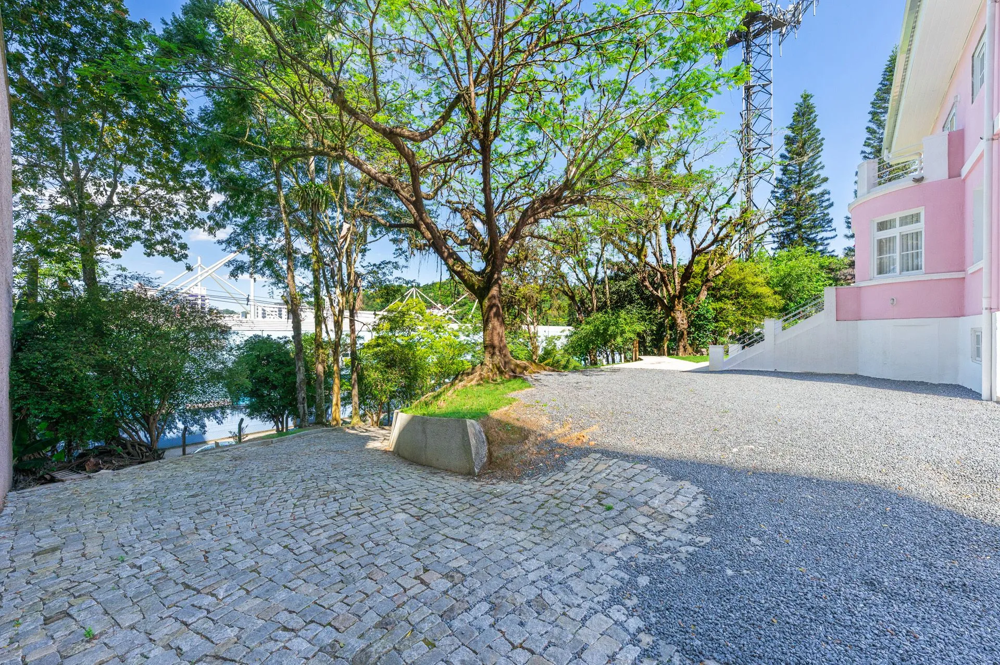
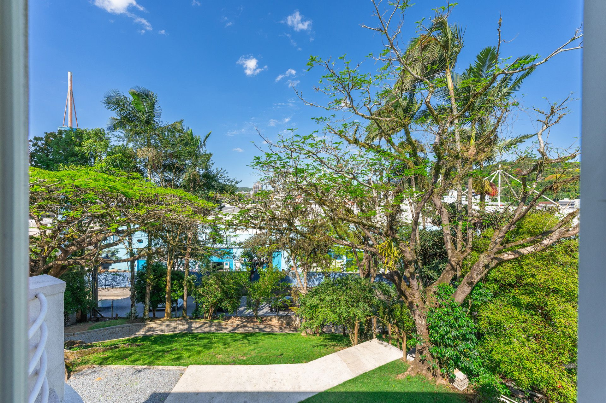
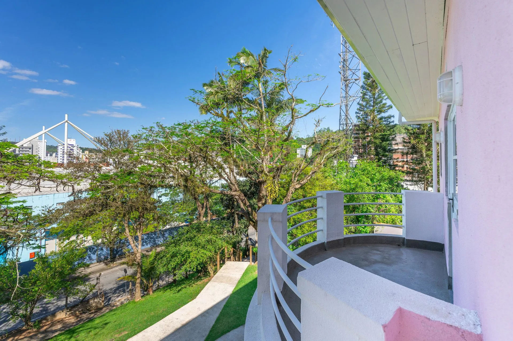
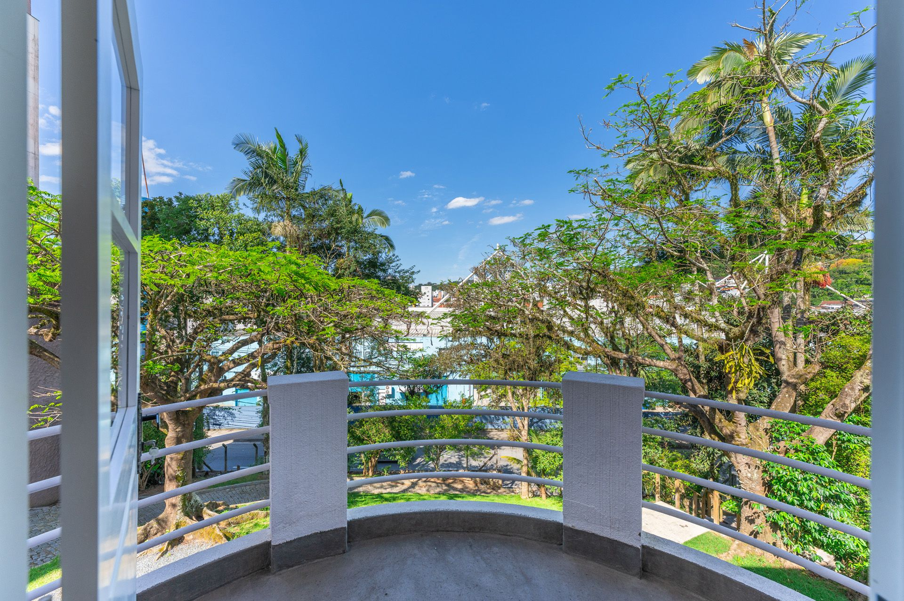
Onde a tranquilidade encontra a tradição de Blumenau
Gastronomia
A Pousada Encanto da Vila oferece um café da manhã estilo americano incluído na diária, com frutas frescas e pastelaria fresca ideal para começar o dia antes de explorar Blumenau.
Para outras refeições, há opções nas redondezas: há restaurantes e confeitarias a poucos minutos a pé, o que facilita quem prefere não depender de transporte para comer fora.
Portanto, embora a pousada não disponha de restaurante próprio estruturado, a combinação de café da manhã + boa localização com restaurantes próximos garante praticidade gastronômica aos hóspedes.
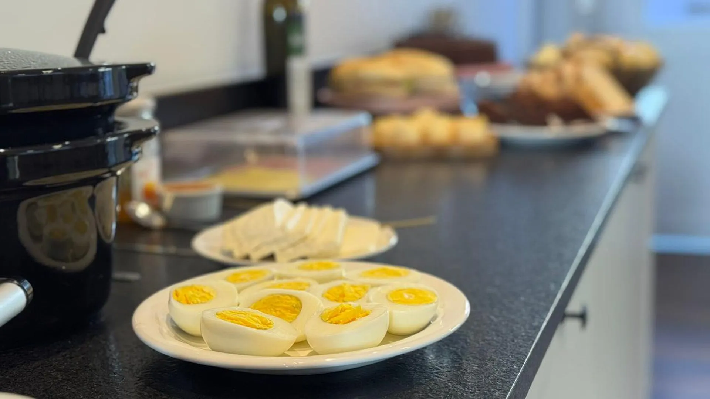
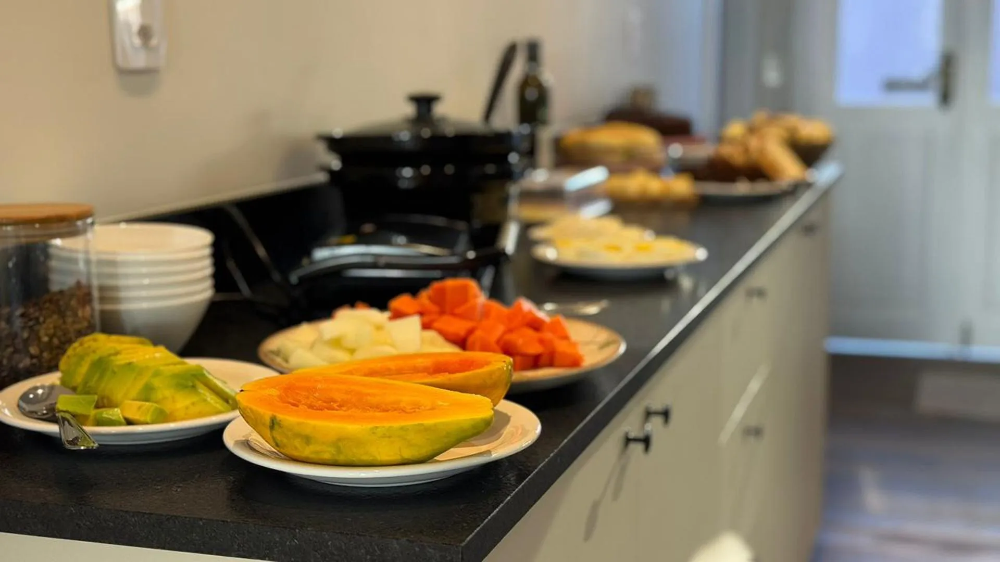
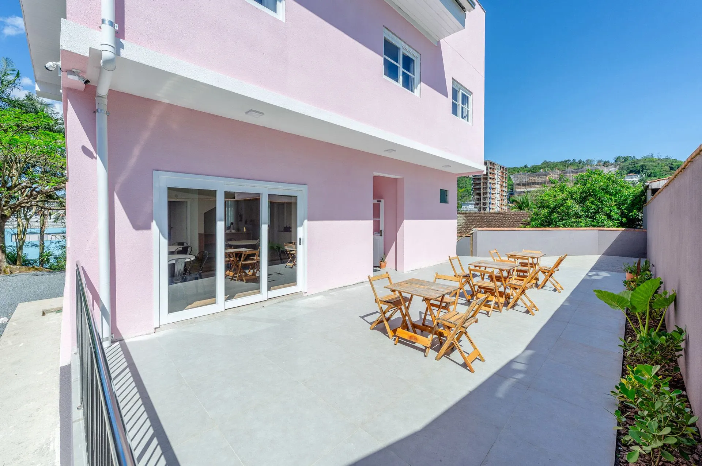
Realize seu Evento
Localização privilegiada da pousada, especialmente pela proximidade com o Parque Vila Germânica e o centro de Blumenau, faz dela uma opção interessante para quem deseja organizar eventos como pequenas celebrações, encontros familiares ou até casamentos íntimos. A estrutura com quartos confortáveis, estacionamento e ambiente acolhedor pode atender bem a convidados.
Além disso, o ambiente interno e externo, com áreas de jardim e espaços aconchegantes, oferece um cenário simpático para eventos mais reservados.
Nossas Fotos
Na página da pousada e em sites de reservas é possível encontrar uma galeria de fotos que exibe a fachada do imóvel, os quartos, os banheiros, áreas comuns como jardim, e até detalhes como mobiliário, camas e decoração
Ver mais